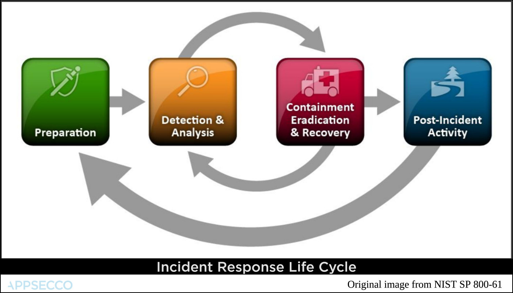
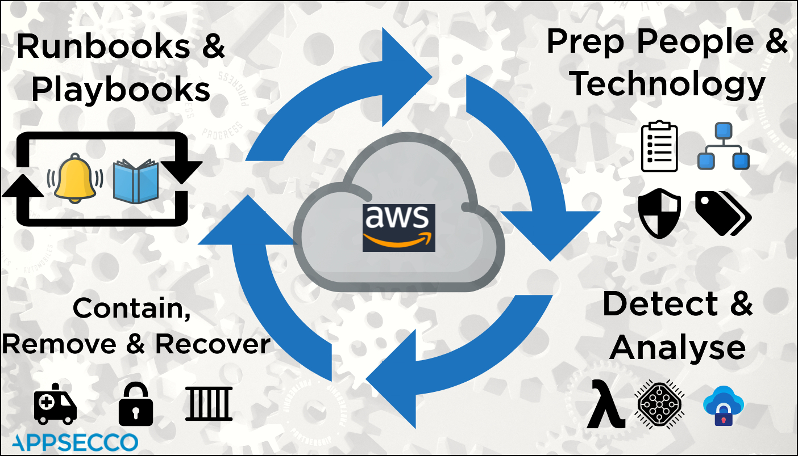
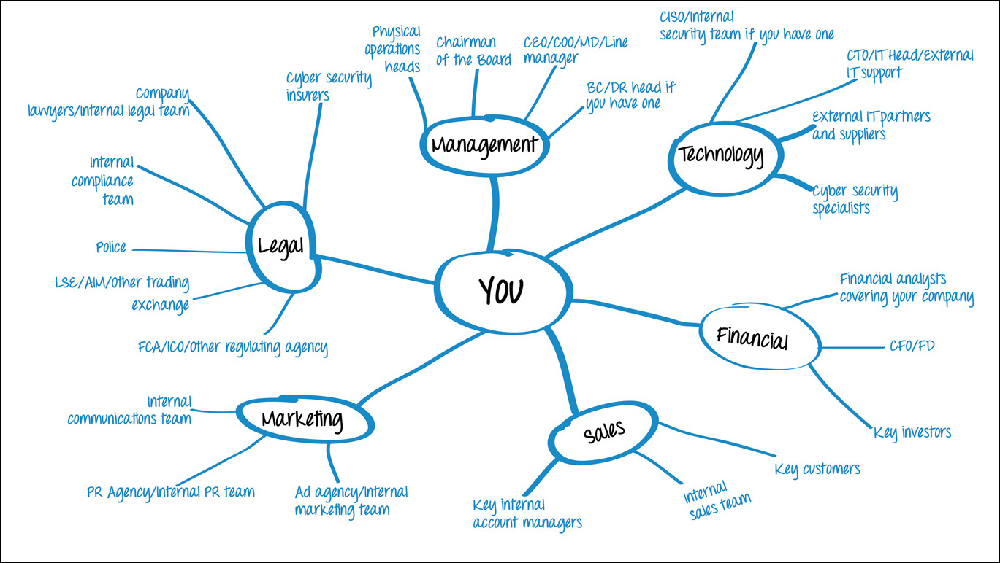
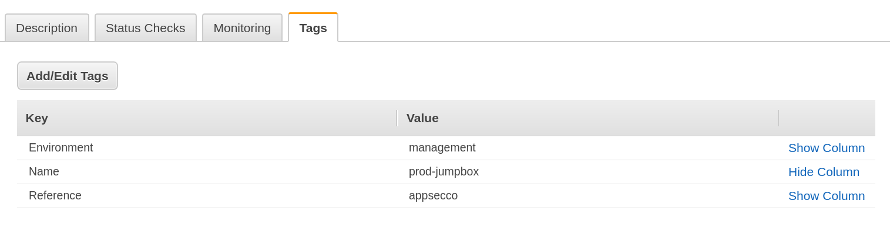
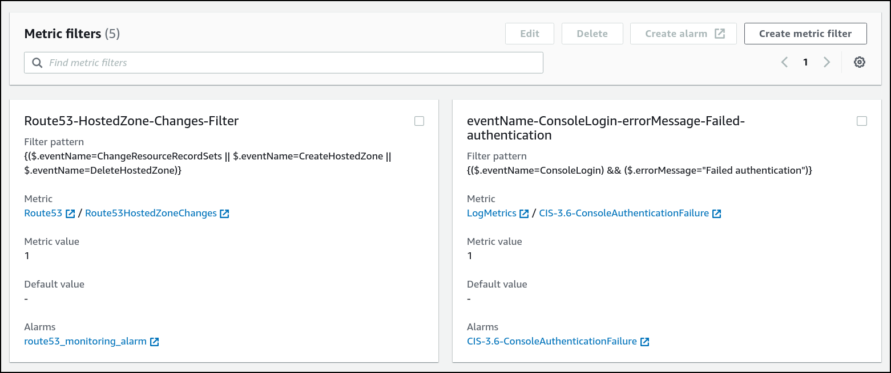
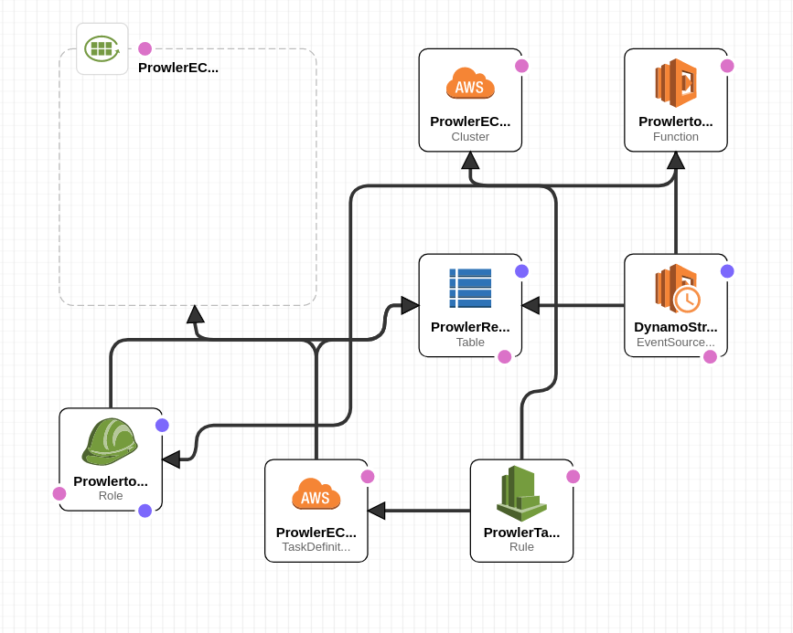

Playbooks and Runbooks for Incident Response
Most of the cloud service providers align their incident response around the life cycle popularised by NIST.

Monitoring for events and logs supported by AWS Lambda serverless | Four main parts
- Preperation
- Detection and Analysis
- Containment, Eradication and Recovery
- Post-incident Activity
AWS Security Incident Response Whitepaper
For AWS the whole process may seem different if we rely on the official Security Incident Response Whitepaper.
For AWS the main life cycle events are
- Prepare People and Technology
- Detect and Analyse
- Contain, Remove and Recover
- Iterate by automating response using runbooks and playbooks

| Num | Stage | Tools and Aids |
|---|---|---|
| 1. | Preparation - People | Roles and Responsibilities known and informed |
| 2. | Preparation - People | Owners for assets by appropriate tags |
| 3. | Preparation - Technology | Best practices, standards benchmarks as checklists |
| 4. | Preparation - Technology | Secure by default at the time of creation and continuous config audits |
| 5. | Detect and Analyse - Compute | Monitoring for events and logs supported by AWS Lambda serverless |
| 6. | Detect and Analyse - Compute | If required additional processing by using Fargate tasks (Containers) |
| 7. | Detect and Analyse - Compute | Store raw logs and data and analysis in secure S3 buckets |
| 8. | Contain, Remove and Recover - Network Layer | Using security groups and network ACLs contain the EC2 |
| 9. | Contain, Remove and Recover - Platform Layer | Remove any backdoor users and revoke STS tokens |
| 10. | Contain, Remove and Recover - Application Layer | Attach compromised disks to another secure host for forensics |
| 11. | Runbooks and Playbooks - Runbook | To ensure that all standard operating procedures are documented |
| 12. | Runbooks and Playbooks - Playbook | A series of steps to be used in case something fails |
Few resources that map to the above stages
Stage - 1 - Who you gonna call

Stage - 2 - Maintaining Assets using Tags

Stage - 3 & 4 - Compliance Checks like CIS Benchmark
Blog Post - Continuous benchmark audits
Stage - 5 - CloudWatch Metric and Alarms

Stage - 6 - Using Prowler as Fargate Task to continuously check for CIS benchmark compliance

Runbooks and Playbooks
They seem similar but there are a few key differences
| Num | Similarity or Difference | Runbook | Playbook |
|---|---|---|---|
| 1. | Difference | Document known procedures | Document how to investigate/troubleshoot when known thing fails |
| 2. | Difference | Ensures when required, SOP is applied consistently | Ensures when needed, response is consistent |
| 3. | Similarity | Well documented manual procedures should be automated | Well documented manual troubleshooting steps should be automated |
| 4. | Difference | Useful post incident to recover and resume normal operations | Useful when investigating what could be causing failure |
| 5. | Difference | After every successful recovery post incident, runbooks should be reviewed and updated as per learnings | After every failure, playbooks should be reviewed and updated as per learnings |